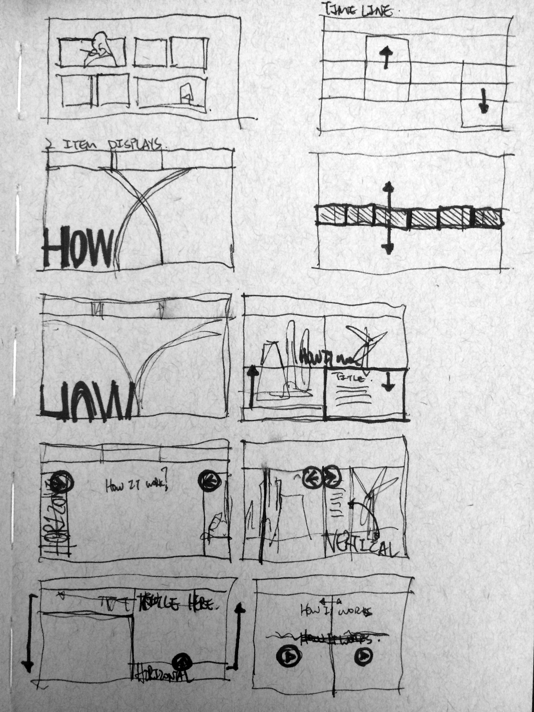
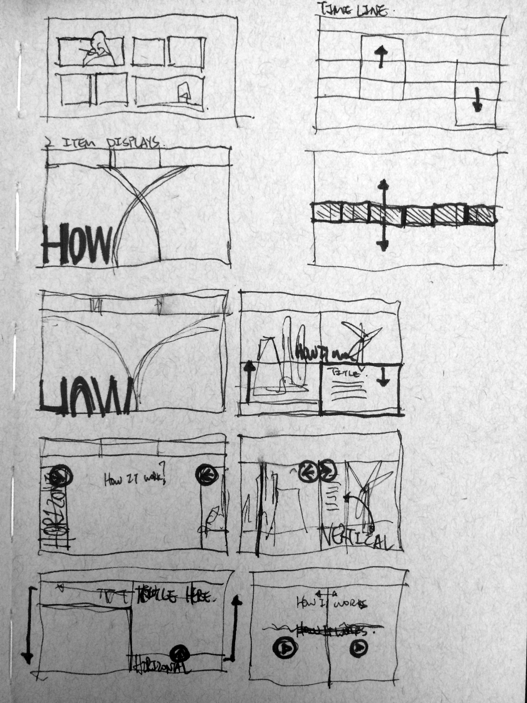
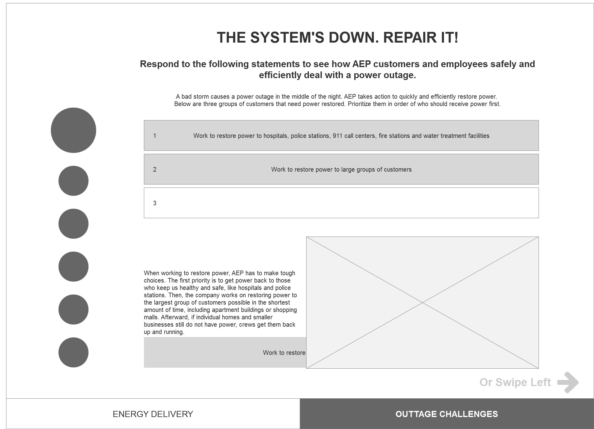
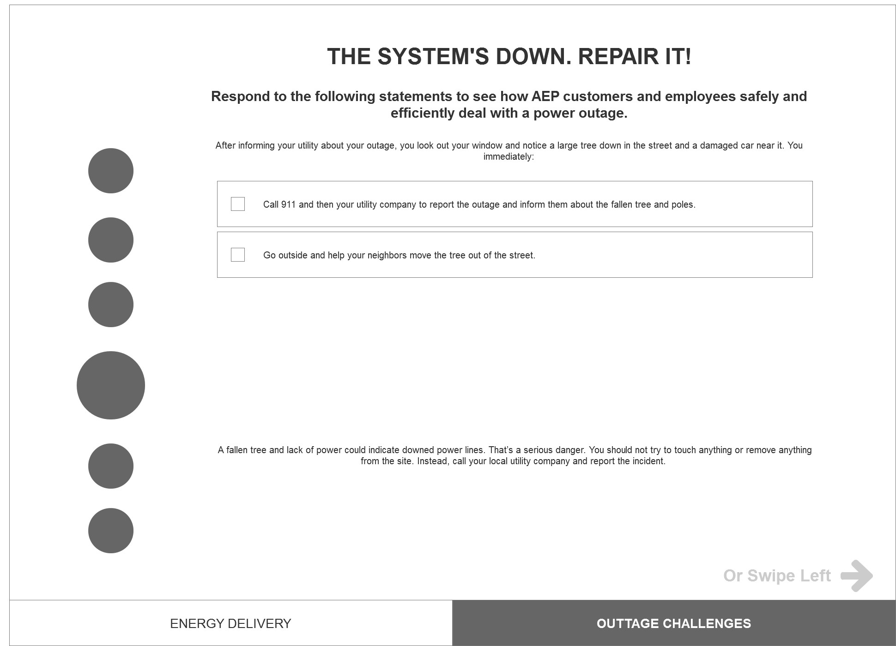

Description
This is a freelance UX project with The History Factory. The History Factory is a company that does a lot of corporate exhibition. This particular one that I worked on for them was for a large utility company in the mid-west. The entierty of the project was to plan, design and construct the new lobby exhibition for the utility company showcasing their history, services and their future plans at their corporate headquarters. The exhibition contains physical static kiosks, banners, column art, digital kiosks and a 30 feet by 12 feet touch screen wall. I was teamed with another freelance UX designer, Jeff, to design all the digital contents in the interactive wall and digital kiosk from their functions to their interfaces. My particular focus was on the digital kiosks that's spread around the lobby. There was no budget given to UX research for this project, but thankfully Jeff, my partner in this project, has close to 20 years of practice experience in digital design and has worked for companies like Yahoo and Accenture as a Full stack developer. We are teamed up with Northern Light Production's development team for this project. NLP does a lot of similar projects like THF, but with a Museum context. They have an in-house development team with an already developed framework, Story Crafter, that we are applying our templates to.
The Beginnings
There was a lot of scattered information at first just because of the nature of the project. The lobby is split into five different areas with different "theme". One of the area is where the huge interactive wall will be installed. A total of 7 digital kiosks resides within these 4 areas. Each digital kiosk has its own unique content. There is a lot of content to be covered in total, but each digital kiosk only gets, at most, a few tabs of content. The script for these content is pretty straigt forward. So forward that it really is a read and flip action between the user and the kiosk. It is very similar to digital kiosks at a Museum where you touch the screen and read and touch and read. So to break it down to its core, the digital kiosks were websites with two to three tabs of information for the user to read. So with some simple tasks laid in front of me, I quickly sketched out some user flows and some page layouts.

 

The Challenges
There are two difficult parts to this seemingly simple project. The first one is it's design. I have not designed any kiosks let alon a musuem information like kiosk. After some research online, it seems like either not many people do it either or people don't like to showcase with these types of projects. I had a very hard time searching for examples of what other has done. The majority of the low fidelity wireframes turn into more of a focus on the functionality. As part of my design process, I like to present at least two ways of interactions and evaluate them with other designers. I like to test out what others have in mind and what kind of style other people like with visual designs than verbal descriptions. So I usually produce very fast and like to get really dirty. After a few rounds of back and forth, I will then be able to settle down and develop something more refined based on my conversations.
 


The functionality brings me to my second challenge. Due to the nature of the content, it's incredibly simple for someone to just plot all the copy onto different pages with a next arrow for as the functionality. But that really defeats the point of having all this content into digital screens. With the script already provided and approved by the client, there isn't much to the script that we can change at this point. So the main focus was then turned towards the presentation of these content. At this point of the project, the interactive wall is shaping up based on the idea of Facebook Paper. A card like display system that provides a sense of dynamics and provide the screen a sense of layering effect. And it is then decided that the digital kiosks will be treated with similar effects. A 2.5 animations will be applied to static photo pages, tabs will open more like a modal or a light box and so forth.
Research
After discovering that there were multiple similar application already in the market, my first reaction was to conduct a SWOT analysis of the other applications. As mentioned earlier, the analysis' conclusion was that no application was completley comperhensive and the one app that had the closest vision to mine was PlanGrid. The user stories were then conducted by talking to a couple old collegues and my personal experience.

Fidelity Design
As with all my previous projects, I started the design process using pen and paper to jot down quick ideas of branding and the most important parts of the interface. Then I fixed them into place with the newly learned Axure RP 8.


The overall layout of the application was rather simple as most pages relies on the same format. The hard part was to figure out the details and specific features that goes into each specific page.Considering that this will be a web application and not a stand alone app, the top navigation with the primary color was needed to allow the user to distinguish it from other sites instantaneously along with some minor functions. The traditional left bar is then added to provide the main navigation of the application.


The most intensive pages are those that basically has an app within an app. The drawing page, for example, basically requires a set of language with in the pdf viewer that needs to reside in the overall layout of the application. The tasks spreadsheet were of similar concept.


Mobile Interface
I originally designed Tape Measure for stationary use because most of the superintendents that I have met are more fluent with desktops than their mobile devices. It is also harder for most of them to focus on a mobile device for a long period of time due to physical limitations. I also would like to push the users towards the destop/tablet application simply because it is much more efficient to work on a device with a keyboard and a mouse than a mobile device and efficiency was the problem that Tape Measure is trying to solve from the beginning.

With that said, I borke down what Tape Measure, as a mobile app, is and compared it to other mobile apps that have a desktop version. Asking questions like why would I need a mobile, what can the user achieve for having a mobile version. The answer to my questions for many apps is the ability to access something anytime anywhere. In other words, convenience or mobility. But my goal for tape measure was to improve efficiency not to log a daily report or adding a team member to the project on my phone because I don’t have my laptop at hand and those tasks would be better done on a stationary.


So I looked at apps that would be obsolete with the mobility element removed. Apps like maps, flashlight,and camera. And then I understood that the mobile version should be an extension of the stationary. A device where its main purpose is to instantly sync information during site walks to the project and access some information from the project. In a way, it's a social media tool for the project’s online profile. All in all, it should be an extension with limited functions not only because it will simplify the interface, I also hope it would drive people to use the stationary more instead of spending time navigating around the phone’s small interface.